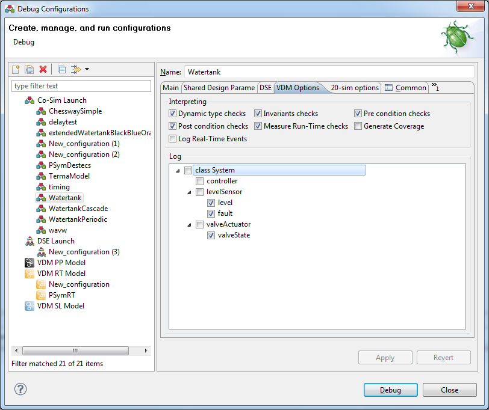
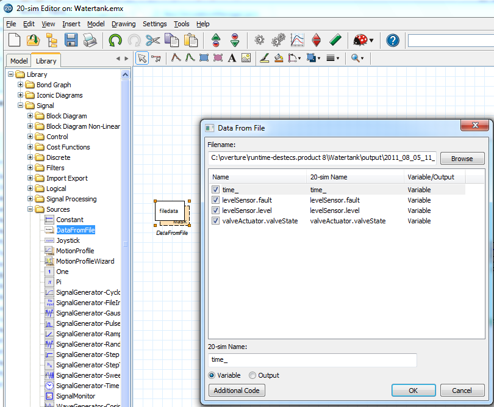

Logging in Crescendo
Logging can be done in both VDM and 20-Sim by either selecting the variables to log in the launch configuration as shown in the picture below or by simply selecting "Save Data File" on a 20-sim plot.

When the simulation finished a DataFromFile source can be added to a 20-sim model as shown in the figure below:

Then both the data file from VDM and 20-sim can be imported like this and plottet. You cannot use the 20-sim variable you want to compare the VDM variable with directly since the "play" button will wrongly run the simulation again without the DE side and produce fake results with no warning.